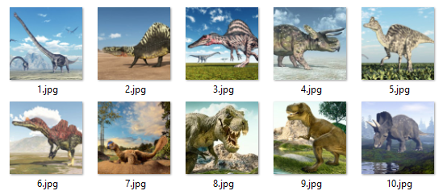

- Retournez deux cartes. Si les images sont identiques, le jeu laisse les cartes visibles.
- Si les images sont différentes, les cartes se retournent face cachées là où elles étaient.
- La partie est terminée lorsque toutes les cartes ont été assemblées par paires.

Si vous voulez vous souvenir de votre score, inscrivez-vous via le
formulaire.
Le jeu garde les 5 meilleurs scores.
Si vous souhaitez relancer une partie cliquez sur
la barre d'espace.